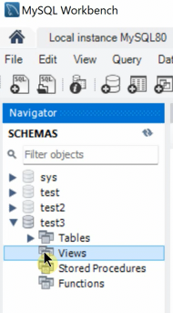
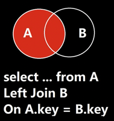
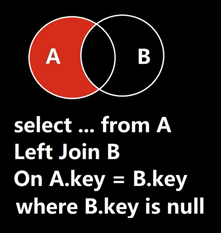
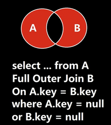
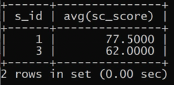
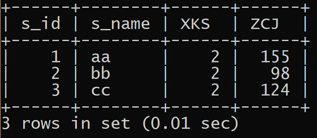

内容
- SQL(Structure Query Language, 结构化查询语言)
- SQL划分为3个类别，DD(Definition)L、DM(Manipulation)L、DC(Control)L
- 库操作
- 表操作
- CRUD
- SQL语句和索引的关系
SQL
SQL即Structure Query Language，结构化查询语言。它是关系型数据库的通用语言。
SQL可划分为以下三种类别：
- DDL(Data Definition Language)
- 数据定义语言，与数据库、表、列、索引等数据库对象的定义有关。
- 常用的语句关键字主要包括
create、drop、alter等。
- DML(Data Manipulation Language)
- 数据操纵语句，用于添加、删除、更新和查询数据库记录，并检查数据完整性。
- 常用的语句关键字主要包括
insert、delete、update、select等。
- DCL(Data Control Language)
- 数据控制语句，用于控制不同的许可和访问级别的语句。与数据库、表、字段、用户的访问权限和安全级别有关。
- 主要的语句关键字包括
grant、revoke。
库操作
查询数据库：show databases;
创建数据库：create database dbname;
删除数据库：drop database dbname;
选择数据库：use dbname;
我们下面以学校的数据库为例，创建库表。
1 | CREATE DATABASE school; |
表操作
表的设计要素：
- 字段的数据类型
- 完整性约束条件的规范
- 一对一/一对多/多对多实体关系对应的表设计原则
- 创建表
1 | CREATE TABLE user( |
对于存储引擎以及默认字符集的配置文件，
在windows下为mysql安装目录下的my.ini；
linux下为/etc/my.cnf。
配置字段为[mysqld]
- 查看表
1 | show tables; |

- 查看表的描述信息
1 | DESC user; |

- 表已创建后，查看表的创建语句
1 | SHOW CREATE TABLE user; |

- 删除表 - drop (不光是表的内容，整个表的结构都没了)
1 | DROP TABLE user; |
不常用的操作
View（视图）
在数据库中，左边栏，存在一个view，可以存放一个表中的多个字段的查询结果，也可以存放多个表连接之后的临时结果。

实际用途中，视图可以用于屏蔽与实际数据库的差异，比如数据库的实际字段可能不是用户请求的字段，视图起了个别名。
也可以用于隐藏一些细节。把实际数据库中的内容提取出来的不敏感的部分放到视图里，建立虚拟的字段，供用户使用。
存储过程
类似于批处理脚本。可以没有返回值。
函数
封装操作过程，可以定义变量，可以有控制语句、循环语句等。必须有返回值。
触发器
触发器的作用：比如插入、删除一条记录等等操作，可以进行相应的回调。
触发器是基于行的，即基于记录的。当操作很多行时，不建议使用触发器。
总结
存储过程和函数一般是专门操作数据库的后端人员负责的。实际上，存储过程和函数的操作，完全可以在上层服务用高级语言（C++等）完成。数据库可以只负责简单的计算。
CRUD
Create - 插入
1 | INSERT INTO user VALUES(1, 'zhangsan', 20, 'M'); #如果不指明插入的属性，则必须按照字段的顺序全部填入 |
- 每次添加一个
1 | INSERT INTO user(name,age,sex) VALUES('zhangsan', 20, 'M'); |
- 批量增加
1 | INSERT INTO user(name,age,sex) VALUES |
最终表中存放的数据是一致的。有啥区别？
我们使用sql，相当于mysql server的一个client。
每次添加一个：
- client和server进行tcp三次握手，建立通信链路；
- client发送sql语句到server上接收并处理，返回处理结果；
- server和client断开连接，tcp四次挥手，释放通信链路。
把每次添加一条记录的操作抽象为3次步骤。则总共需要3*n个步骤。
而如果是批量添加：
- client和server进行tcp三次握手，建立通信链路；
- client发送sql语句到server上接收并处理，返回处理结果；
- server和client断开连接，tcp四次挥手，释放通信链路。
则总共仅需3个步骤，即可全部插入。
Delete - 删除
1 | DELETE FROM user; #删除表中所有数据 |
Update - 更新
1 | UPDATE user SET age=age+1 WHERE name='gaoyang'; #调正gaoyang的年龄+1 |
Retrieve - 查询
在这里我们示例一些简单的查询语句。
- 无条件查询全部字段
1 | SELECT * FROM user; #不推荐，最好还是老老实实地写出所有字段名称，因为表的结构之后可能会变更，可能会影响业务代码。 |
- 条件查询指定字段
1 | SELECT name,age,sex FROM user WHERE age>=21; |
1 | # 以下两个sql语句效果一致。 |
- 使用通配符查询
1 | SELECT name,age,sex FROM user WHERE name LIKE "zhang%";#必须用LIKE，不能用=等号，否则会把%通配符看作实际字符。 |
- 判断为空不用
=，而用IS NULL
1 | SELECT name,age,sex FROM user WHERE name IS NULL; |
去重
有两种去重的方式
distinct- 简单地去重group by- 功能强大，耗时
1 | SELECT DISTINCT age FROM user; |

合并查询 - union
格式如下
1 | SELECT expression1, expression2, ..., expression |
1 | SELECT name,age,sex |

SQL语句和索引的关系
1 | SELECT name,age,sex FROM user WHERE age=20 OR age=21; |
通常都说带逻辑与的SQL语句会用到索引，带逻辑或的SQL语句不会用到索引。比如上面这句带逻辑或的SQL语句不会用到索引吗？错误。
如果仅仅是对于这个SQL语句的表象来说，是不会用到索引的。但是MySQL实际运行过程中是会对用户提交的SQL语句进行优化的。
OR的语义是：要么..., 要么...。对于逻辑或语句，MySQL有可能将其转化为union合并查询，即前后分别执行两个不同的不带逻辑或的SQL语句，这样的SQL语句是完全可以用不到索引的。
类似地，带in的SQL语句，表面上是能用到索引；带not in的SQL语句，表面上用不到索引。带仅仅限于MySQL不做优化的情况。
所以，会不会用到索引不能只看表面的SQL语句，而要看MySQL实际如何优化。
连接查询
表1：Employees
| EmployeeID | Name | DepartmentID |
|---|---|---|
| 1 | 张三 | 101 |
| 2 | 李四 | 102 |
| 3 | 王五 | 102 |
| 4 | 赵六 | 103 |
| 5 | 钱七 | NULL |
表2：Departments
| DepartmentID | DepartmentName |
|---|---|
| 101 | 人事部 |
| 102 | 技术部 |
| 104 | 财务部 |
笛卡尔积（交叉查询）
1 | SELECT |
| EmpID | EmpName | A_DeptID | B_DeptID | DeptName |
|---|---|---|---|---|
| 1 | 张三 | 101 | 101 | 人事部 |
| 1 | 张三 | 101 | 102 | 技术部 |
| 1 | 张三 | 101 | 104 | 财务部 |
| 2 | 李四 | 102 | 101 | 人事部 |
| 2 | 李四 | 102 | 102 | 技术部 |
| 2 | 李四 | 102 | 104 | 财务部 |
| 3 | 王五 | 102 | 101 | 人事部 |
| 3 | 王五 | 102 | 102 | 技术部 |
| 3 | 王五 | 102 | 104 | 财务部 |
| 4 | 赵六 | 103 | 101 | 人事部 |
| 4 | 赵六 | 103 | 102 | 技术部 |
| 4 | 赵六 | 103 | 104 | 财务部 |
| 5 | 钱七 | NULL | 101 | 人事部 |
| 5 | 钱七 | NULL | 102 | 技术部 |
| 5 | 钱七 | NULL | 104 | 财务部 |
内连接 (INNER JOIN / JOIN)

通俗解释：只保留“两头都能配上对”的数据。 两边都有记录的才显示出来。
1 | SELECT Employees.EmployeeID, Employees.Name, Departments.DepartmentName |
结果：
| EmployeeID | Name | DepartmentName |
|---|---|---|
| 1 | 张三 | 人事部 |
| 2 | 李四 | 技术部 |
| 3 | 王五 | 技术部 |
赵六(员工ID4) 的部门ID是103，而部门表里没有103号部门，所以被过滤掉了。财务部(部门ID 104) 没有任何员工，也没出现。
左连接 (LEFT JOIN / LEFT OUTER JOIN)

通俗解释：“左边表全保，右边表尽量配”。 左表所有记录都显示，右表有匹配的也显示出来，没匹配的补空值（NULL）。
场景： 列出所有员工（不管有没有部门），同时如果员工有部门，就显示部门名称（没有部门的员工，部门名称显示为空）。
1 | SELECT Employees.EmployeeID, Employees.Name, Departments.DepartmentName |
结果：
| EmployeeID | Name | DepartmentName | DepartmentID |
|---|---|---|---|
| 1 | 张三 | 人事部 | 101 |
| 2 | 李四 | 技术部 | 102 |
| 3 | 王五 | 技术部 | 102 |
| 4 | 赵六 | NULL | 103 |
| 5 | 钱七 | NULL | NULL |
- 左边员工表 (
Employees) 的 5 条记录全部保留。 张三、李四、王五在部门表里找到了匹配 (101,102)，所以显示部门名称。赵六(部门ID103) 在部门表里没找到对应的名字，所以部门名称显示为 NULL。钱七（员工ID5）的部门 ID 本来就是 NULL，所以无法查询，显示 NULL。- 部门表中孤立的
财务部(104) 没出现。
如何筛选出A表中外键为NULL的记录

如此查询，便能筛选出钱七。
这个图的意思是：在外面的红色部分，与B没有交集，意思就是说，外面这部分没有记录来自B的外键信息，与B无关联。
右连接 (RIGHT JOIN / RIGHT OUTER JOIN)
（其实相当于左连接的镜像，左连接时，A和B表交换书写位置就是他们的右连接）
通俗解释：“右边表全保，左边表尽量配”。 右表所有记录都显示，左表有匹配的也显示出来，没匹配的补空值（NULL）。（和左连接方向相反）
场景： 列出所有部门（不管有没有员工），同时如果部门下有员工，就列出员工姓名；没人的部门，员工信息显示为空。
1 | SELECT Employees.EmployeeID, Employees.Name, Departments.DepartmentName |
结果：
| EmployeeID | Name | DepartmentName |
|---|---|---|
| 1 | 张三 | 人事部（101） |
| 2 | 李四 | 技术部（102） |
| 3 | 王五 | 技术部（102） |
| NULL | NULL | 财务部（104） |
- 右边部门表 (
Departments) 的 3 条记录(101,102,104)全部保留。 人事部(101)、技术部(102) 找到了员工 (张三/李四,王五)，显示姓名。财务部(104) 在员工表里没任何员工，所以员工ID和姓名都是 NULL。- 员工
赵六(部门ID103)、钱七（员工ID5，部门IDNULL） 没出现（因为它的部门103在部门表里不存在，不属于右表保留范围）。
全连接 (FULL JOIN / FULL OUTER JOIN)

通俗解释：“两个表我都全要！管你配不配得上！” 两个表的所有记录都保留。能配上对的就合并成一行显示。配不上对的，各自那边的空缺就用 NULL 填充。
场景： 想做一个完整的组织结构/花名册快照，既要看到所有员工（包括没部门的），也要看到所有部门（包括没员工的）。信息齐全！
1 | SELECT Employees.EmployeeID, Employees.Name, Departments.DepartmentName |
结果：
| EmployeeID | Name | DepartmentName | DepartmentID |
|---|---|---|---|
| 1 | 张三 | 人事部 | 101 |
| 2 | 李四 | 技术部 | 102 |
| 3 | 王五 | 技术部 | 102 |
| 4 | 赵六 | NULL | 103 |
| 5 | 钱七 | NULL | NULL |
| NULL | NULL | 财务部 | 104 |
- 全部 6 种情况都展示出来了：
- 有员工有部门 (
张三-人事部,李四-技术部,王五-技术部)。 - 有员工没(匹配的)部门 (
赵六、钱七)。 - 有部门没(匹配的)员工 (
财务部)。
- 有员工有部门 (
如何筛选出A表或B表的外键为NULL的记录

如此查询，便能筛选出钱七。
由于本例中B表没有外键，因此无法体现B表中没有外键的记录。
连接查询（Join）和联合查询（Union）的区别
联合查询（Union Query）： 这个概念容易和连接混淆。
- 通俗解释： 把两张结构_相似_的表 上下拼起来。就像把《番茄供应商名单》和《鸡蛋供应商名单》摞在一起，变成《食材供应商总名单》。注意：是垂直叠加！
- 核心要求：
- 两张表查询结果的列数必须一样。
- 对应列的数据类型要兼容（比如数字对数字，字符串对字符串）。
1 | SELECT EmployeeID, Name FROM Employees -- 查员工ID和名字 |
| EmployeeID/DepartmentID | Name/DepartmentName |
|---|---|
| 1 | 张三 |
| 2 | 李四 |
| 3 | 王五 |
| 4 | 赵六 |
| 5 | 钱七 |
| 101 | 人事部 |
| 102 | 技术部 |
| 104 | 财务部 |
| 注意：这个例子不常用，只是为了展示UNION效果。UNION更常用于合并同类型数据，比如不同年份的销售记录表 |
SELECT ... FROM A, B WHERE ...和SELECT ... FROM A JOIN B ON ...的区别
这两者功能上对于内连接(INNER JOIN)是等效的，但存在关键区别：语法标准、可读性、维护性以及错误预防能力。
| 特性 | SELECT ... FROM A, B WHERE ... (隐式连接) |
SELECT ... FROM A JOIN B ON ... (显式连接) |
|---|---|---|
| 语法本质 | 老式SQL标准，FROM子句用逗号分隔表，WHERE定义条件和连接 | 新式SQL-92标准，用JOIN关键字明确指定连接类型和条件 |
| 连接类型 | 默认是交叉连接(CROSS JOIN)，需要WHERE过滤才能变成内连接 | 明确指出连接类型 (INNER/LEFT/RIGHT/FULL JOIN) |
| 连接条件位置 | 和过滤条件混在WHERE子句中 | 连接条件在独立的ON子句，过滤条件在WHERE（逻辑分离） |
| 可读性 & 维护性 | 差（复杂查询时条件混乱） | 优（清晰区分连接条件和过滤逻辑） |
| 防止笛卡尔积错误 | 弱（忘记WHERE会导致全组合） | 强（JOIN必须配ON或USING，否则语法错误） |
| 支持外连接 | 部分数据库不支持（如Oracle老语法用(+)） |
所有数据库都支持标准外连接写法(LEFT/RIGHT/FULL JOIN) |
| 现代推荐度 | ⚠️ 不推荐（尤其复杂查询） | ✅ 强烈推荐 |
练习

查询平均成绩大于60分的同学的学号和平均成绩。
1 | select s_id, avg(sc_score) |

查询所有同学的学号、姓名、选课总数、总成绩。
1 | select s_id, s_name, count(c_id), sum(sc_score) from student left join score on student.s_id = score.s_id; |
也可以这么写，嵌套select：
1 | select student.s_id, student.s_name, count_id as XKS, sum_id as ZCJ |

查询没有选全部课的同学的学号、姓名。
1 | select student.s_id, student.s_name from student, score |
先让score表补充一列学生的姓名。
再让此临时表，按学号（确定1人）分组，每一组的s_id数就是这个人选的课程数。
结果

删除Kim老师课的Score表记录
为了看到效果，临时增加一条成绩。

1 | delete from score |
后面的select，先让course表补充一列老师的名字，之后筛选出老师名字是Kim的course；
in用于批量处理。
结果：